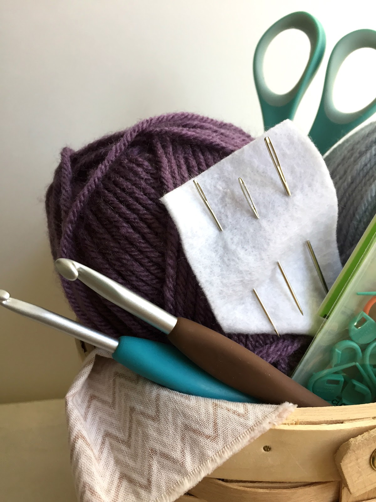
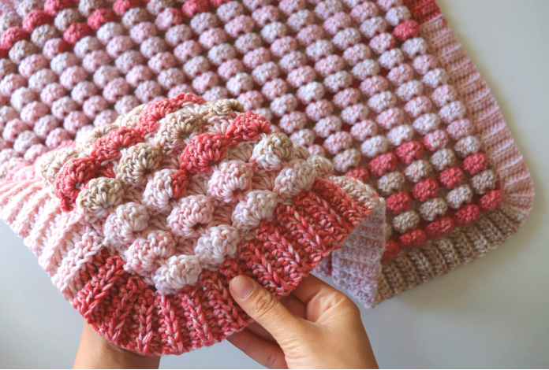
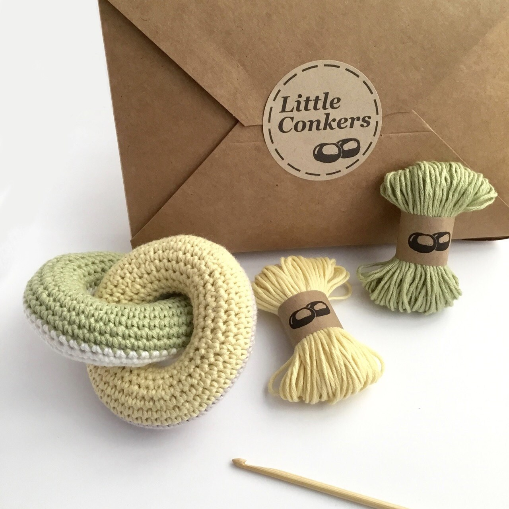
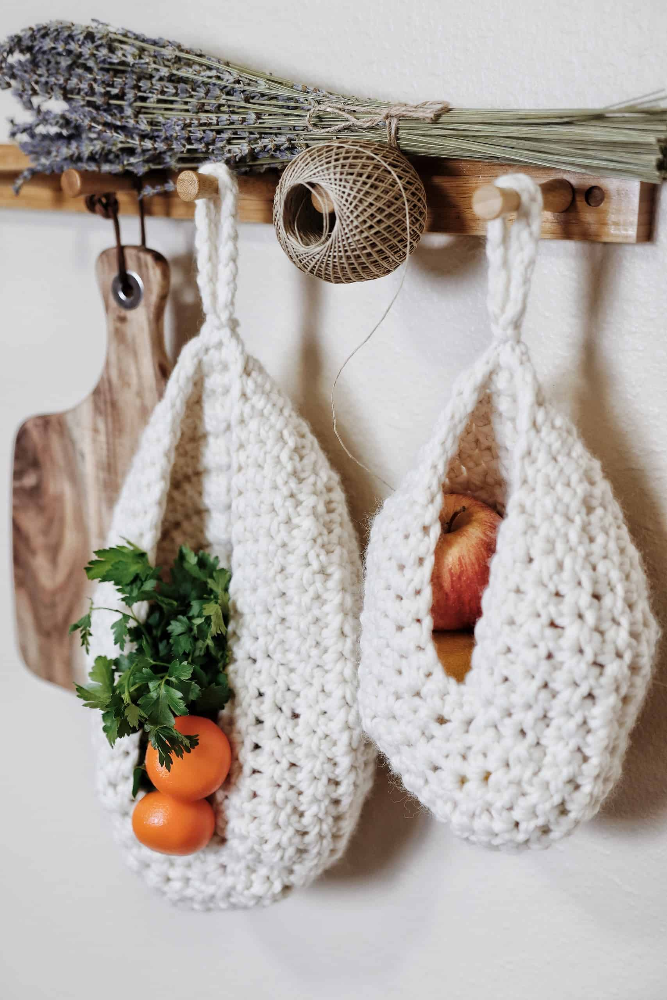

Why crochet?
The world of Crochet
One of the great things about crochet is that you don’t need many tools to get started. All you need are: a crochet hook and yarn. Most people hold the crochet hook in one of two ways: the pencil method or the knife method.
- Pencil Grip: Hold the crochet hook like a pencil between your thumb and index finger. Use your third finger underneath for more balance and control.
- Knife Grip: Place your hand over the hook, palm facing down. Hold the hook between your thumb and index finger. Wrap your other three fingers around the shaft of the crochet hook for greater control.
Crochet
Type of Projects

Blanket
You can make a blanket for everyone. This can expand to other accessories such as scarfs and head warmers etc.
Learn more


Storage
You can create boxes, hanging wall baskets, towel handles and more around the home
Learn more